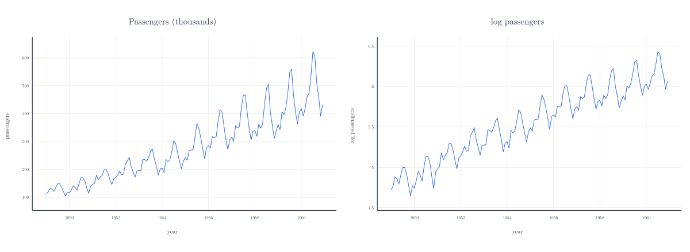
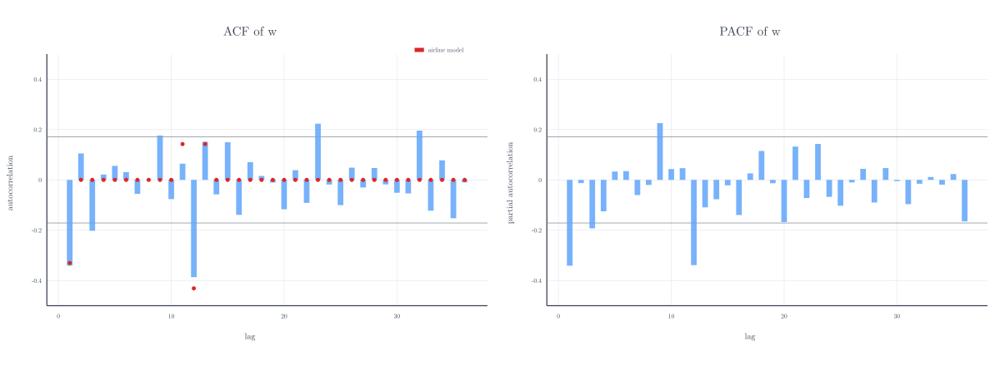
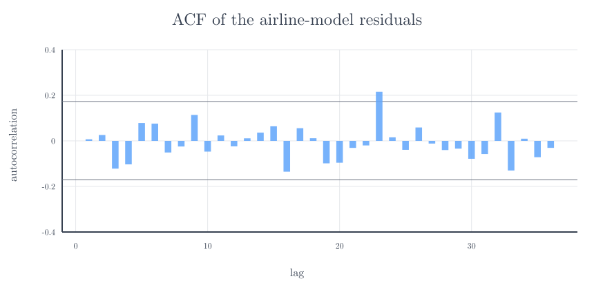
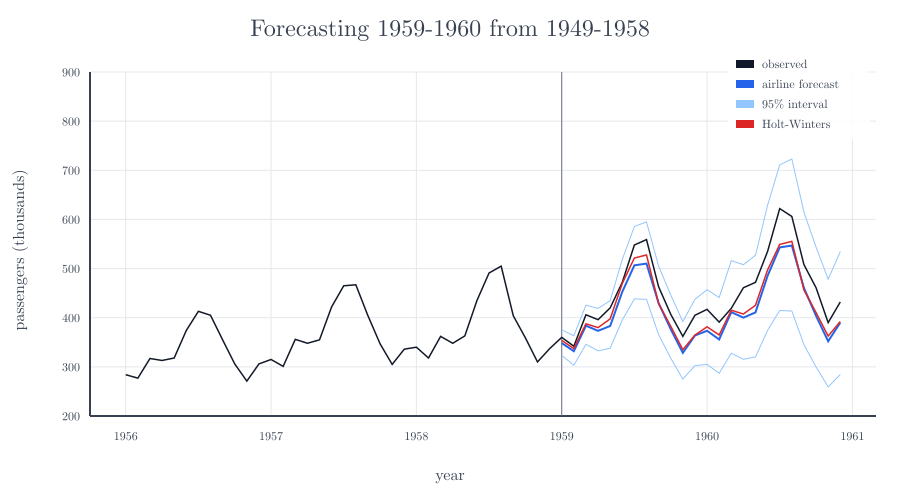

Seasonal ARIMA: The Airline Model
Abstract
Box and Jenkins built their seasonal ARIMA methodology around one series:
monthly international airline passengers from 1949 to 1960, now
dm::datasets::air_passengers(). We follow their three steps on it. For
identification, logs stop the seasonal swings from growing with the level, and
two differences make the series stationary. The sample autocorrelations then
spike at lags 1 and 12, which points to the "airline model"
\((1-B)(1-B^{12})\log y_t=(1+\theta B)(1+\Theta B^{12})\varepsilon_t\). We
derive that model's theoretical autocorrelations. For estimation, conditional
least squares gives \(\hat\theta=-0.377\) and \(\hat\Theta=-0.572\), identical
to R's arima(method = "CSS") to six digits. The Ljung-Box test finds no
structure left in the residuals (\(p=0.31\)). For forecasting,
\(\psi\)-weights give the forecast standard errors, which grow from 3.7% to 8.6%
over a year. Refitted on 1949–1958, the model forecasts 1959–1960 with a mean
absolute percentage error of 8.4%, and all 24 months fall inside its 95%
intervals. Holt-Winters exponential smoothing does slightly better here, at
6.7%.
The data: twelve years of air travel
air_passengers holds the monthly totals of international airline passengers,
in thousands, from January 1949 to December 1960. It is R's AirPassengers,
also known as Box and Jenkins' series G.
#include <dm/dm.hpp>
namespace agg = dm::agg;
int main() {
std::filesystem::create_directories("build");
const auto air =
dm::datasets::air_passengers() |
dm::mutate("log_passengers", [](const auto &r) {
return std::log(r.get_double("passengers"));
});
std::print("{}\n\n", air | dm::group_by("year") | dm::summarise(agg::mean("passengers", "mean"), agg::min("passengers", "min"), agg::max("passengers", "max"), agg::min("log_passengers", "log min"), agg::max("log_passengers", "log max")) | dm::mutate("range / mean", [](const auto &r) {
return (r.get_double("max") - r.get_double("min")) / r.get_double(
"mean");
}) | dm::mutate("log range", [](const auto &r) {
return r.get_double("log max") - r.get_double("log min");
}) |
dm::select({"year", "mean", "min", "max", "range / mean", "log range"}) |
dm::to_md(3));
std::vector<double> t, y, ly;
for (std::size_t i = 0; i < air.nrows(); ++i) {
t.push_back(air.double_at("year", i) + (air.double_at("month", i) - 1) /
12.0);
y.push_back(air.double_at("passengers", i));
ly.push_back(air.double_at("log_passengers", i));
}
auto layout = dm::graphics::RLayout::create(1, 2);
layout.add(dm::graphics::RPlot::create().lines(t, y, "",
dm::RGB{37, 99, 235}, 1.5).title("Passengers (thousands)").x_label("year").y_label("passengers"));
layout.add(dm::graphics::RPlot::create().lines(t, ly, "",
dm::RGB{37, 99, 235}, 1.5).title("log passengers").x_label("year").y_label("log passengers"));
layout.size(1200, 440).save_svg("build/arima_series.svg");
}| year | mean | min | max | range / mean | log range |
|---|---|---|---|---|---|
| 1949 | 126.667 | 104 | 148 | 0.347 | 0.353 |
| 1950 | 139.667 | 114 | 170 | 0.401 | 0.400 |
| 1951 | 170.167 | 145 | 199 | 0.317 | 0.317 |
| 1952 | 197.000 | 171 | 242 | 0.360 | 0.347 |
| 1953 | 225.000 | 180 | 272 | 0.409 | 0.413 |
| 1954 | 238.917 | 188 | 302 | 0.477 | 0.474 |
| 1955 | 284.000 | 233 | 364 | 0.461 | 0.446 |
| 1956 | 328.250 | 271 | 413 | 0.433 | 0.421 |
| 1957 | 368.417 | 301 | 467 | 0.451 | 0.439 |
| 1958 | 381.000 | 310 | 505 | 0.512 | 0.488 |
| 1959 | 428.333 | 342 | 559 | 0.507 | 0.491 |
| 1960 | 476.167 | 390 | 622 | 0.487 | 0.467 |

Traffic grew almost fourfold, from a mean of 127 thousand a month in 1949 to 476 thousand in 1960, with a peak every July or August. The yearly range grew from 44 to 232, faster than the mean. The variation is roughly proportional to the level, so the series is analysed on the log scale. The last column is the range of the logs, which is close to the range divided by the mean. It still creeps up from about 0.35 to about 0.47: the summer peak became relatively more pronounced. But the log removes most of the growth, and the model below treats what is left as noise.
The model
Seasonal ARIMA
Write \(B\) for the backshift operator, \(By_t=y_{t-1}\). A seasonal ARIMA\((p,d,q)(P,D,Q)_s\) model says that, after \(d\) ordinary and \(D\) seasonal differences, the series is a stationary ARMA process:
where \(\varepsilon_t\) is white noise with variance \(\sigma^2\), and \(\phi,\Phi,\theta,\Theta\) are polynomials of degrees \(p,P,q,Q\) with constant term 1. A trend that grows steadily is removed by \((1-B)\), and a stable seasonal pattern by \((1-B^{12})\).
The airline model and its autocorrelations
Box and Jenkins proposed \((0,1,1)(0,1,1)_{12}\) on \(\log y_t\). Let \(w_t=(1-B)(1-B^{12})\log y_t\). Multiplying out the MA side,
Its autocovariances \(\gamma_k=\operatorname{Cov}(w_t,w_{t-k})\) are sums of products of coefficients whose lags differ by \(k\). Only lags 1, 11, 12 and 13 have such pairs:
Dividing by \(\gamma_0\):
and every other autocorrelation is zero. This is the signature to look for in the sample: a spike at lag 1, a spike at lag 12, small echoes at 11 and 13 with the same sign as their product, and nothing else.
Conditional least squares
Given \(\theta\) and \(\Theta\), the residuals follow from the model by recursion, starting from zeros:
The conditional sum of squares \(S(\theta,\Theta)=\sum_t\varepsilon_t^2\) is
minimised, and then \(\hat\sigma^2=S/n\) with
\(\ell=-\tfrac n2(\log2\pi+\log\hat\sigma^2+1)\). stats::ARIMA minimises \(S\)
by differential evolution inside \(|\theta|,|\Theta|\le1.5\). The exact Gaussian
likelihood (R's default) also accounts for the unknown starting values, which
changes the estimates slightly.
Forecasts and their errors
Expanding the full model, differences included, as \(\log y_t=\sum_{j\ge0}\psi_j\varepsilon_{t-j}\) gives the \(\psi\)-weights, which solve
where \(a_i\) are the coefficients of the full AR side, differences included, and \(b_j\) of the MA side. The \(h\)-step forecast error is \(\sum_{j<h}\psi_j\varepsilon_{t+h-j}\), so its standard error is \(\sigma\sqrt{\sum_{j<h}\psi_j^2}\). For the airline model, \(\psi_j=1+\theta\) for \(j=1,\dots,11\). Each step ahead therefore adds \((1+\theta)^2\sigma^2\) to the variance: the standard error grows like \(\sqrt h\), and faster after a full year. Forecasts are made on the log scale and exponentiated. That gives the forecast median, and the exponentiated interval \(\exp(f\pm1.96\,\text{se})\) keeps its 95% coverage.
Identification
The next block differences the log series twice and computes the sample ACF and
PACF of \(w_t\) with stats::acf and stats::pacf. It compares the ACF with
the airline model's theoretical ACF from stats::arma_acf, using the
coefficients fitted in the next section.
#include <dm/dm.hpp>
int main() {
std::filesystem::create_directories("build");
auto y =
dm::datasets::air_passengers().get_column<double>("passengers").values();
for (double &v : y) v = std::log(v);
const auto w = dm::stats::difference(dm::stats::difference(y, 1), 12);
const auto r = dm::stats::acf(w, 36);
const auto p = dm::stats::pacf(w, 36);
dm::stats::ARIMAOptions o;
o.d = 1;
o.q = 1;
o.seasonal_d = 1;
o.seasonal_q = 1;
o.seasonal_period = 12;
const dm::stats::ARIMA model(y, o);
const auto rho =
dm::stats::arma_acf({}, model.expanded_ma_coefficients(), 36);
const double bound = 1.96 / std::sqrt(static_cast<double>(w.size()));
std::print("w has {} values; approximate 95% bounds for a white-noise ACF are +/-{:.3f}.\n\n",
w.size(), bound);
std::print("| lag | sample ACF | airline-model ACF | sample PACF |\n| ---: | ---: | ---: | ---: |\n");
for (std::size_t k = 1; k <= 14; ++k)
std::print("| {} | {:+.3f} | {:+.3f} | {:+.3f} |\n", k, r[k], rho[k],
p[k - 1]);
std::size_t outside = 0;
for (std::size_t k = 1; k <= 36; ++k) outside += std::fabs(r[k]) > bound;
std::print("\nSample ACF values outside the bounds at lags 1-36: {}.\n",
outside);
std::vector<double> lags, acf_v, pacf_v, model_v;
for (std::size_t k = 1; k <= 36; ++k) {
lags.push_back(k);
acf_v.push_back(r[k]);
pacf_v.push_back(p[k - 1]);
model_v.push_back(rho[k]);
}
auto layout = dm::graphics::RLayout::create(1, 2);
layout.add(dm::graphics::RPlot::create().bars(lags, acf_v, "",
dm::RGB{96, 165, 250}, 0.5).points(lags, model_v, "airline model", dm::RGB{220, 38, 38}, 4.0).abline_h(bound, dm::RGB{107, 114, 128}, 1.0).abline_h(-bound, dm::RGB{107, 114, 128}, 1.0).y_limits(-0.5, 0.5).title("ACF of w").x_label("lag").y_label("autocorrelation"));
layout.add(dm::graphics::RPlot::create().bars(lags, pacf_v, "",
dm::RGB{96, 165, 250}, 0.5).abline_h(bound, dm::RGB{107, 114, 128}, 1.0).abline_h(-bound, dm::RGB{107, 114, 128}, 1.0).y_limits(-0.5, 0.5).title("PACF of w").x_label("lag").y_label("partial autocorrelation"));
layout.size(1200, 440).save_svg("build/arima_acf.svg");
}w has 131 values; approximate 95% bounds for a white-noise ACF are +/-0.171.
| lag | sample ACF | airline-model ACF | sample PACF |
|---|---|---|---|
| 1 | -0.341 | -0.330 | -0.341 |
| 2 | +0.105 | +0.000 | -0.013 |
| 3 | -0.202 | +0.000 | -0.193 |
| 4 | +0.021 | +0.000 | -0.125 |
| 5 | +0.056 | +0.000 | +0.033 |
| 6 | +0.031 | +0.000 | +0.035 |
| 7 | -0.056 | +0.000 | -0.060 |
| 8 | -0.001 | +0.000 | -0.020 |
| 9 | +0.176 | +0.000 | +0.226 |
| 10 | -0.076 | +0.000 | +0.043 |
| 11 | +0.064 | +0.142 | +0.047 |
| 12 | -0.387 | -0.431 | -0.339 |
| 13 | +0.152 | +0.142 | -0.109 |
| 14 | -0.058 | +0.000 | -0.077 |
Sample ACF values outside the bounds at lags 1-36: 6.

The two biggest autocorrelations are at lags 1 and 12, both negative, as the airline model predicts when \(\theta\) and \(\Theta\) are negative. The fitted model reproduces them: \(-0.330\) against \(-0.341\) at lag 1, and \(-0.431\) against \(-0.387\) at lag 12. The predicted echoes at lags 11 and 13 are \(+0.142\). The sample has \(+0.152\) at lag 13, a close match, but only \(+0.064\) at lag 11. Six sample values out of 36 cross the white-noise bounds, at lags 1, 3, 9, 12, 23 and 32, against about two expected by chance. Lags 3 and 9 (\(-0.20\) and \(+0.18\)) are not part of the model. Box and Jenkins judged these small enough to leave out. The residual check below supports that choice. The PACF, which for a pure MA process decays instead of cutting off, has large values at 1 and 12 and smaller ones around them. It points the same way.
Estimation and diagnostics
The block fits the airline model, prints the estimates next to R's, and tests the residuals with Ljung-Box over 24 lags. Two parameters were estimated, so the test has 22 degrees of freedom.
#include <dm/dm.hpp>
int main() {
std::filesystem::create_directories("build");
auto y =
dm::datasets::air_passengers().get_column<double>("passengers").values();
for (double &v : y) v = std::log(v);
dm::stats::ARIMAOptions o;
o.d = 1;
o.q = 1;
o.seasonal_d = 1;
o.seasonal_q = 1;
o.seasonal_period = 12;
const dm::stats::ARIMA model(y, o);
std::print("| quantity | stats::ARIMA (CSS) | R arima, CSS | R arima, ML |\n| :--- | ---: | ---: | ---: |\n");
std::print("| theta (ma1) | {:.6f} | -0.377162 | -0.401828 |\n",
model.ma_coefficients()[0]);
std::print("| Theta (sma1) | {:.6f} | -0.572379 | -0.556945 |\n",
model.seasonal_ma_coefficients()[0]);
std::print("| sigma^2 | {:.6f} | 0.001389 | 0.001348 |\n", model.sigma2());
std::print("| log-likelihood | {:.4f} | 245.0666 | 244.6996 |\n",
model.log_likelihood());
std::print("| residuals used | {} | | |\n", model.n_used());
const auto &e = model.residuals();
const auto lb = dm::stats::ljung_box_test(e, 24, 2);
std::print("\nLjung-Box over 24 lags: Q = {:.2f} on {} df, p = {:.3f} (R: Q = 24.65, p = 0.3141).\n",
lb.statistic, lb.parameter1, lb.p_value);
const std::vector<double> used(e.begin() + 13, e.end());
const auto r = dm::stats::acf(used, 36);
const double bound = 1.96 / std::sqrt(static_cast<double>(used.size()));
std::vector<double> lags, v;
std::size_t outside = 0;
for (std::size_t k = 1; k <= 36; ++k) {
lags.push_back(k);
v.push_back(r[k]);
outside += std::fabs(r[k]) > bound;
}
std::print("Residual autocorrelations outside +/-{:.3f} at lags 1-36: {} (about 1.8 expected by chance).\n",
bound, outside);
dm::graphics::RPlot::create().bars(lags, v, "", dm::RGB{96, 165, 250}, 0.5).abline_h(bound, dm::RGB{107, 114, 128}, 1.0).abline_h(-bound, dm::RGB{107, 114, 128}, 1.0).y_limits(-0.4, 0.4).title("ACF of the airline-model residuals").x_label("lag").y_label("autocorrelation").size(860, 420).save_svg("build/arima_residuals.svg");
}| quantity | stats::ARIMA (CSS) | R arima, CSS | R arima, ML |
|---|---|---|---|
| theta (ma1) | -0.377162 | -0.377162 | -0.401828 |
| Theta (sma1) | -0.572379 | -0.572379 | -0.556945 |
| sigma^2 | 0.001389 | 0.001389 | 0.001348 |
| log-likelihood | 245.0666 | 245.0666 | 244.6996 |
| residuals used | 131 |
Ljung-Box over 24 lags: Q = 24.65 on 22 df, p = 0.314 (R: Q = 24.65, p = 0.3141). Residual autocorrelations outside +/-0.171 at lags 1-36: 1 (about 1.8 expected by chance).

The library's conditional least squares agrees with R's to every printed digit, for both coefficients, the variance and the log-likelihood. The exact maximum-likelihood fit moves \(\theta\) by 0.025 and \(\Theta\) by 0.015. Both coefficients are negative. In the airline model \(\theta\approx-0.38\) means that this month's surprise is partly reversed next month. \(\Theta\approx-0.57\) means that more than half of a surprise in a given month is cancelled in the same month a year later: the seasonal pattern adapts, but slowly.
The Ljung-Box statistic, 24.65 on 22 degrees of freedom (\(p=0.31\)), is the same as R's. It uses all 144 residuals, including the 13 zeros where the recursion starts, as R does. Only one of 36 residual autocorrelations crosses the bounds, about what chance gives. The structure at lags 3 and 9 seen above is gone, so the model has captured the dependence.
Forecasting a held-out year
A fit to all 144 months cannot be checked against the future. So the next block
refits the airline model to 1949–1958 only and forecasts the 24 months of 1959
and 1960. The forecasts are compared with two other methods. Holt-Winters
exponential smoothing (stats::ExponentialSmoothing with additive trend) is
fitted with additive and with multiplicative seasonality. The seasonal naive
method simply repeats the last observed year.
#include <dm/dm.hpp>
namespace st = dm::stats;
int main() {
std::filesystem::create_directories("build");
const auto y =
dm::datasets::air_passengers().get_column<double>("passengers").values();
const std::vector<double> train(y.begin(), y.begin() + 120), test(
y.begin() + 120, y.end());
std::vector<double> log_train;
for (double v : train) log_train.push_back(std::log(v));
st::ARIMAOptions o;
o.d = 1;
o.q = 1;
o.seasonal_d = 1;
o.seasonal_q = 1;
o.seasonal_period = 12;
const st::ARIMA airline(log_train, o);
const auto[f, se] = airline.forecast_with_intervals(24);
std::vector<double> point, lo, hi;
int covered = 0;
for (std::size_t h = 0; h < 24; ++h) {
point.push_back(std::exp(f[h]));
lo.push_back(std::exp(f[h] - 1.96 * se[h]));
hi.push_back(std::exp(f[h] + 1.96 * se[h]));
covered += test[h] >= lo.back() && test[h] <= hi.back();
}
auto mape = [&](const std::vector<double> & fc) {
double s = 0;
for (std::size_t h = 0; h < 24; ++h)
s += std::fabs(fc[h] - test[h]) / test[h];
return 100 * s / 24;
};
std::print("Airline model on 1949-1958: theta = {:.3f}, Theta = {:.3f}. Forecast se from {:.4f} to {:.4f} (log scale).\n" "{} of 24 held-out months lie inside the 95% intervals.\n\n",
airline.ma_coefficients()[0],
airline.seasonal_ma_coefficients()[0], se[0], se[23], covered);
std::print("| method | parameters | MAPE 1959-1960 |\n| :--- | :--- | ---: |\n");
std::print("| airline model, log scale | | {:.2f}% |\n", mape(point));
std::vector<double> hw_add;
for (auto seasonal : {st::SeasonalType::Additive,
st::SeasonalType::Multiplicative}) {
st::ExponentialSmoothingOptions eo;
eo.trend = st::TrendType::Additive;
eo.seasonal = seasonal;
eo.seasonal_period = 12;
const st::ExponentialSmoothing hw(train, eo);
const auto fc = hw.forecast(24);
if (seasonal == st::SeasonalType::Additive) hw_add = fc;
std::print("| Holt-Winters, {} seasonality | alpha {:.3f}, beta {:.3f}, gamma {:.3f} | {:.2f}% |\n",
seasonal == st::SeasonalType::Additive ? "additive"
: "multiplicative", hw.alpha(), hw.beta(), hw.gamma(),
mape(fc));
}
std::vector<double> naive;
for (std::size_t h = 0; h < 24; ++h) naive.push_back(train[108 + h % 12]);
std::print("| seasonal naive (repeat 1958) | | {:.2f}% |\n", mape(naive));
std::vector<double> t_hist, y_hist, t_fc;
for (std::size_t i = 84; i < 144; ++i) {
t_hist.push_back(1949 + i / 12.0);
y_hist.push_back(y[i]);
}
for (std::size_t h = 0; h < 24; ++h) t_fc.push_back(1959 + h / 12.0);
dm::graphics::RPlot::create().lines(t_hist, y_hist, "observed",
dm::RGB{17, 24, 39}, 1.5).lines(
t_fc, point, "airline forecast", dm::RGB{37, 99, 235}, 2.0).lines(
t_fc, lo, "95% interval", dm::RGB{147, 197, 253}, 1.0).lines(
t_fc, hi, "", dm::RGB{147, 197, 253}, 1.0).lines(t_fc, hw_add,
"Holt-Winters",
dm::RGB{220, 38, 38},
1.5).abline_v(
1959, dm::RGB{107, 114, 128}, 1.0).y_limits(200, 900).title(
"Forecasting 1959-1960 from 1949-1958").x_label("year").y_label(
"passengers (thousands)").size(900, 500).save_svg(
"build/arima_forecast.svg");
}Airline model on 1949-1958: theta = -0.318, Theta = -0.567. Forecast se from 0.0380 to 0.1607 (log scale). 24 of 24 held-out months lie inside the 95% intervals.
| method | parameters | MAPE 1959-1960 |
|---|---|---|
| airline model, log scale | 8.38% | |
| Holt-Winters, additive seasonality | alpha 0.236, beta 0.030, gamma 1.000 | 6.70% |
| Holt-Winters, multiplicative seasonality | alpha 0.309, beta 0.030, gamma 1.000 | 7.29% |
| seasonal naive (repeat 1958) | 15.52% |

All three model-based methods beat the seasonal naive forecast by a wide margin, because it ignores the growth. The airline model's forecast has the right seasonal shape but runs low: traffic in 1959 and 1960 grew faster than the 1949–1958 fit expected. All 24 actual values still fall inside its 95% intervals, which widen from \(\pm7\%\) one month ahead to roughly \(\pm30\%\) two years ahead (a standard error of 0.161 on the log scale). Additive Holt-Winters is more accurate on this split, 6.7% against 8.4%. Both Holt-Winters fits push the seasonal smoothing parameter to its upper limit, \(\gamma=1\): each new month replaces its seasonal index completely. This is how they follow the steepening summer peaks noted above. One hold-out period is a single draw, so the ranking should not be taken as general.
Summary
- Logs turn the growing seasonal swings into constant ones, and \((1-B)(1-B^{12})\) removes the trend and the seasonal pattern. The differenced series has autocorrelation spikes at lags 1 and 12 and small echoes at 11 and 13. These are the theoretical signature of the airline model, \(\rho_{11}=\rho_{13}=\rho_1\rho_{12}\).
- Conditional least squares in
stats::ARIMAreproduces R's CSS fit to six digits: \(\hat\theta=-0.377\), \(\hat\Theta=-0.572\), \(\hat\sigma^2=0.00139\). The residuals pass the Ljung-Box test. - The \(\psi\)-weights explain how forecast uncertainty grows: on the log scale the standard error is 3.7% one month ahead and 8.6% a year ahead.
- Out of sample, the airline model's 95% intervals covered all 24 held-out months, but its point forecasts fell short of the faster growth of 1959–1960. Holt-Winters was more accurate on this split.
#include <dm/dm.hpp>
auto y =
dm::datasets::air_passengers().get_column<double>("passengers").values();
for (double &v : y) v = std::log(v);
auto w = dm::stats::difference(dm::stats::difference(y, 1), 12);
auto r = dm::stats::acf(w, 36); // and dm::stats::pacf(w, 36)
dm::stats::ARIMAOptions o;
o.d = 1;
o.q = 1;
o.seasonal_d = 1;
o.seasonal_q = 1;
o.seasonal_period = 12;
dm::stats::ARIMA fit(y, o);
auto lb = dm::stats::ljung_box_test(fit.residuals(), 24, 2);
auto[forecast, se] =
fit.forecast_with_intervals(12); // log scale; exponentiate for passengers